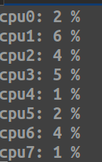

A multithreaded per-core CPU usage monitor for Linux that reads statistics directly from /proc/stat and displays real-time utilization percentages. The program uses a producer-consumer architecture with four dedicated threads, mutex-protected shared data structures, and a watchdog system for thread health monitoring.
git clone https://github.com/ArturKos/cpu_usage_tracker.git cd cpu_usage_tracker make
Check out the project on GitHub: CPU Usage Tracker on GitHub
Back to Portfolio